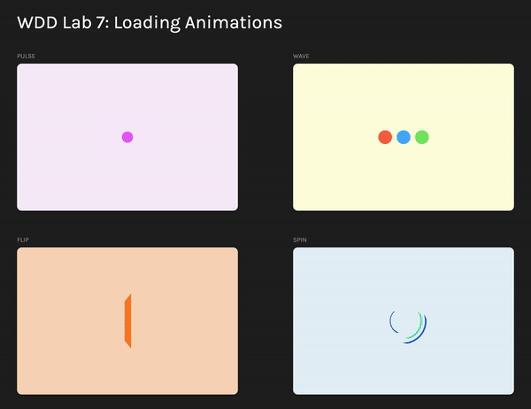

Welcome to the Animation Lab!
Throughout this lab, be sure to note the differences between transitions and animations--when might you want to use one over the other?
In our discussion of keyframe animation, it also proves useful from a design standpoint to think about how the easing (or pacing, based on a timing function) of an animation changes the way that it feels to a user; these intuitive senses can have a strong impact on users' perceptions of a brand.
We hope to show you the power of pure CSS animation--many animations are built using JavaScript, but CSS alone pulls an incredible amount of weight!
Overview
All changes will be made in the style.css and index.html files. We'll be recreating four classic loading animations often seen on landing pages and webapps based on our discussion of keyframes in lecture.
As always, if you'd like to have a guide on hand or use external resources to further support your learning, CSS Tricks has a simple reference on the CSS animation property. If you're interested in furthering your learning, be sure to check out our footnotes on other modes of web animation and other related topics.
By the end of this lab, you'll have built a collection like this:

CSS Animation Fundamentals
Animations in CSS are a series of changes made to an element's properties over time. They act much like transitions, but where transitions can only make one change to a property, animations can change a property many times in succession, which creates an animated effect. We define animations in CSS using keyframes, which allow us to set the state of our properties at certain times in the animation, usually defined as percentages. To apply or add an animation to an element, we use the animation property, which is a shorthand property for the animation's name, duration, easing, and delay, among other properties. Animation easings or timing functions allow us to change the rate at which the animation is completed.
Part 0: Understanding the Document
The skeleton code for this lab is a bit lengthy; read on for a short explanation of its structure.
The #loaders container is what we'll be interested in in this lab--it stores all of the loader containers, which store the cards that you see on the page. Loader containers should be structured like so:
<div class="loader-container">
<div class="loader-card">
<div class="loader number">
<!-- Elements for the loader go in here! -->
</div>
</div>
<div class="bg"></div>
</div>Where .bg is the background, shadow, and label of the card, .loader-card is the card with the content itself, and .loader is the loader that the card displays, with .number replaced with the number of that loader.
You'll also notice that the document has somewhat responsive behavior; by using a flexbox grid with cards whose width and height are bounded (i.e. using min-width and max-width), we get a responsive effect that handles our cards well. Webpages with more complex responsive functionality would likely use media queries, but they are out of scope for this lab.
If you'd like to create more cards, just add a new block of this structure to your HTML below the existing loader containers! Feel free to use this document as a playground.
Part 1: Loader 1, Pulse
We'll start out with a pulsing circle animation. First, create a new .loader.one inside of our first .loader-card:
<div class="loader one">
<div class="first circle"></div>
<div class="second circle"></div>
</div>Let's animate it! We'll be making the two .circles scale up so that they appear to pulse outwards. We'll first need to write a keyframe animation for the scaling. Our animation has just two steps: start at size 0, and end at full size. Add your animation at PART 1.1 in style.css.
Hint: You can use the transform: scale(<scale factor>) property to transform the circles' size. Since we only have two steps, you can use the from and to rules in your keyframe animation. The scale factor here is some positive number, with 1 being the original size of the circle.
Next, add this animation to your circles using the animation property (make the change at PART 1.2). Your animation should last 2 seconds and repeat infinitely.
At this point, your circle will pulse outwards, but it'll seem like there's only one circle. This is because both circles are growing at the same rate and at the same time. How should we fix this? We can delay the second circle's animation, so that it begins to grow after the first circle does! Add this animation delay to the second circle at PART 1.3. You've completed your first loader!
Part 2: Loader 2, Wave
Our second loader is a series of dots that move up and down in a wave. In this case, our animation has three steps:
- The starting position, which is the same as its current position.
- The middle position, where the dot is lifted up.
- The end position, which is the same as the starting position.
Since we have more than two states between which we'd like to animate, we can use percentages to define our keyframe animation.
We'll first add to our second .loader-card a new .loader.two made up of three dots in a flexbox:
<div class="loader two">
<div class="first dot"></div>
<div class="second dot"></div>
<div class="third dot"></div>
</div>At the parts labeled PART 2…
- Write a
@keyframesblock for the wave animation - Add the wave animation to our dots so that it lasts 2 seconds and loops forever.
- Delay the animation for the second and third dots, so that each one is delayed by 0.25 seconds more than the last. (In other words, the second dot should have a delay of 1/4 of a second, and the third should start 1/4 second after the second.)
- Color the second (
#4DB1F7) and third (#7DE76A) dots.
You've completed your second loader!
Part 3: Loader 3, Flip tile
Our third loader is a flipping tile. Here, we'll need to introduce 3D transformations in CSS! Just as we can rotate or scale an element in two dimensions using the transformations that we've explored so far, so too can we rotate and transform elements in 3D. To do so, CSS transformations support rotateX() and rotateY() functions, which rotate our element along the x and y axes. CSS also has a perspective() transformation; we can understand perspective() by considering the browser window to be like a camera in a 3D space.
Suppose that our webpage is a wall, and our camera is filming it head-on. In this case, perspective() acts like our camera's zoom functionality: we can choose a lower perspective value if we want our camera to be closer to the wall, and a higher perspective value if we want our camera to be farther from the wall. The farther away we are, the less drastic an animation's effects will be in 3D space (play around with perspective() to get a feel for this yourself!).
CSS 3D transforms are tricky and sometimes hard to visualize, so don't be afraid to grab a TA or instructor and ask if you need an extra hand. To create our flipping tile (at the parts labeled PART 3)…
- Create a new loader once more--this time, all that needs to be placed inside of our
.loader.threeis a single<div class="flip-tile">. - Write the
@keyframesanimation for our tile. We should have three different points in the animation:- We should first start with just the perspective of 300px (
transform: perspective(300px)) - In the second step, we want the card to be flipped in the Y-direction. We can do this with
transform: perspective(300px) rotateY(180deg). (Theperspective()should stay here.) - In the last step, we want the card to be flipped both horizontally and vertically, so we'll add onto the last one
rotateX(180deg)as well.
- We should first start with just the perspective of 300px (
- Apply the animation to our tile so that it lasts 2.6 seconds and runs forever.
You've completed your third loader!
Part 4: Challenge! Loader 4, Spin
Our fourth loader adds a bit more complexity, and uses two animations: first, we make our concentric rings spin; and second, we apply a change in color all throughout to create an animated gradient. Although we won't necessarily apply two animations to one element in this loader, know that we can! To apply two animations to the same element, we can simply separate the animations with commas:
animation: first 1s infinite, second 2s infinite;We'll first add our new loader:
<div class="loader four">
<div class="rings">
<!-- ... -->
</div>
</div>Our .rings div will store all of the ring elements that we'll animate. Since we can't easily create arcs with variable sizes in CSS, we instead use the following structure for each ring:
- Use an outer div with a circular shape to contain all other elements. We'll call this
.ring. - Use an inner div with a circular shape smaller than the outer div to hide the elements within. We'll call this
.mask. - Use a rectangle masked by the outer and inner divs to create an arc. We'll call this
.arc-container. - Color only half of the rectangle (i.e. create an inner rectangle) so that the arc displays on only one side of the ring. We'll call this
.arc.
The resulting structure for each ring looks like this:
<div class="ring one">
<div class="arc-container">
<div class="arc"></div>
</div>
<div class="mask"></div>
</div>We'll ultimately have 3 rings (sorry, Ariana Grande fans).
Given this structure, we'll want to animate a few things:
- To spin the rings, we rotate our rectangle.
- To give our spin a bit more life, we change the
border-radiusof our arc-container to shorten and lengthen the arc. - To change the color of our rings, we change the background color of our arc.
We want our animation to look very continuous with no changes in the speed of the animation, so for this animation, we'll change our ease, or timing curve! By default, CSS uses ease-in-out, but we'll instead use a linear ease for our spinning animation.
Given these parameters, write your animation at the parts labeled PART 4.
- All rings should continue to rotate forever.
- The first ring should finish rotating in 1 second and finish changing color in 2.2 seconds.
- The second ring should spin and change color more slowly than the first ring. Its color animation should run in reverse.
- The third ring should spin faster than the first ring and change color more slowly than the second ring.
- Your color animation can have as many stops (changes of states, or percentage points) as you'd like! We recommend using three to four colors; don't forget to make the color loop back to the same color it was originally in your animation. We used #10D4C6, #3068CD, #7910D4, and #41EA97.
- The second ring should be delayed by 0.2 seconds, and the third ring should be delayed by 0.1 seconds.
You've completed your fourth loader!
Congrats on finishing your first foray into CSS animation! CSS independently is extremely powerful--it can be used to create a wide array of engaging displays. If you're interested in learning more about animation, be sure to explore JavaScript-based animation once we start learning JavaScript!
More to Explore
Want to dive deeper into the content covered in this lab? You can explore some related topics here! If not, continue on to checkoff. You don't have to understand stuff we talk about in this section.
Submission
Your lab checkoff word will be the same as your attendance word! No need to submit anything :)